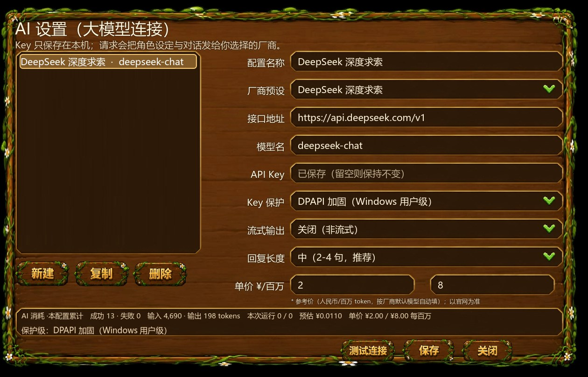

对话与立绘
剧情对话、表情立绘与选项，保持角色原本的语气。
每个 NPC 有自己的人设、职业和记忆。对话由本地逻辑与 DeepSeek API 共同生成，既保留角色感，也不会答得离谱。
剧情对话、表情立绘与选项，保持角色原本的语气。
玩家可以输入任意问题，NPC 会按人设和当前上下文作答。

接的是 DeepSeek 的 deepseek-chat，Key 只存在本机，用 Windows 用户级 DPAPI 加密。
本地逻辑先处理人设、记忆与兜底，再决定是否请求模型。
固定台词只能撑过第一次对话；完全交给大模型，又会答偏、延迟、成本失控。
所以对话先过本地逻辑：由它决定“说什么、什么时候说”，模型只负责在角色人设内组织语言。
每个 NPC 有人设、职业和记忆，作为上下文；请求失败走本地兜底；回复长度和调用频率都做了限制。NPC 之间也会互相聊天，不只对玩家说话。
玩家可以自由提问，NPC 仍然像小镇居民。配置页里能看到调用次数、token 和预估成本，预算可控。
取舍上，没有用本地小模型，选了 API + 兜底，优先稳定和开发速度；这也让后续换模型、加 NPC 更容易。